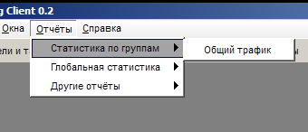
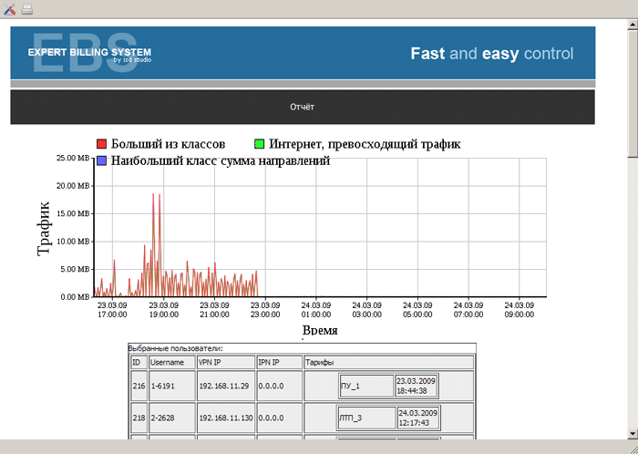

|
Назначение и особенности |
Top Previous Next |
|
Более глубоко и детально наглядно продемонстрировать результаты деятельности провайдера помогут различные отчеты, реализованные в данном разделе Expert Billing Admin.

Система предлагает шесть типов отчетов на выбор:

Для каждого отчета предлагается ряд гибких индивидуальных настроек, готовые материалы могут быть сразу же отправлены на печать. This help file was created with an unregistered evaluation copy of Help & Manual. © EC Software. All rights reserved. This message will not appear if you compile this help file with the registered version of Help & Manual. |